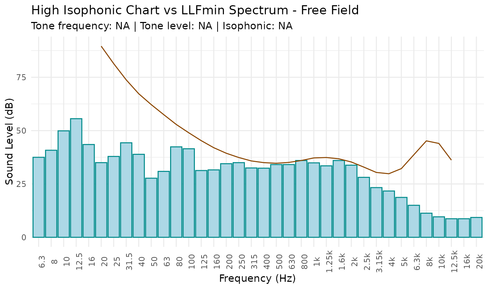

research pure tone
Examples
# Search pure tone from PTFA dataset
# dataframe have to contain date and LLfmin (minor value of Linear level frequency)
search.tone(PTFA[, c(3:38)], plot.tone = FALSE)
#> [1] "Tone frequency: NA" "Tone level: NA" "Isophonic: NA"
# Plot result
search.tone(PTFA[, c(3:38)], plot.tone = TRUE)
#> Warning: Removed 7 rows containing missing values or values outside the scale range
#> (`geom_line()`).
